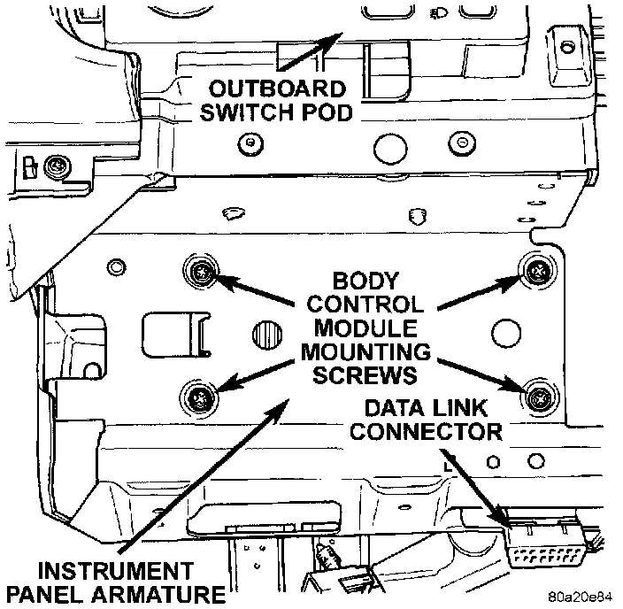

Body Control Module: Service and Repair
REMOVALWARNING: ON VEHICLES EQUIPPED WITH AIRBAGS, REFER TO AIR BAGS AND SEAT BELTS/AIR BAGS BEFORE ATTEMPTING STEERING WHEEL, STEERING COLUMN, OR INSTRUMENT PANEL COMPONENT DIAGNOSIS OR SERVICE. FAILURE TO TAKE THE PROPER PRECAUTIONS COULD RESULT IN ACCIDENTAL AIRBAG DEPLOYMENT AND POSSIBLE PERSONAL INJURY.
1. Remove the knee blocker/steering column cover as described.
Body Control Module Remove/Install:

2. Remove the four screws below the outboard switch pod that secure the Body Control Module (BCM) to the instrument panel armature.
3. Move the BCM towards the steering column far enough to unplug the three wire harness connectors.
4. Remove the BCM from the instrument panel.
5. Reverse the removal procedures to install.
NOTE: If a new Body Control Module is installed, the programmable features must be enabled and/or disabled to the customer's preferred settings. Use a DRB scan tool and the proper Computers and Control Systems/Body Control Module/Testing and Inspection Procedures to perform these operations.